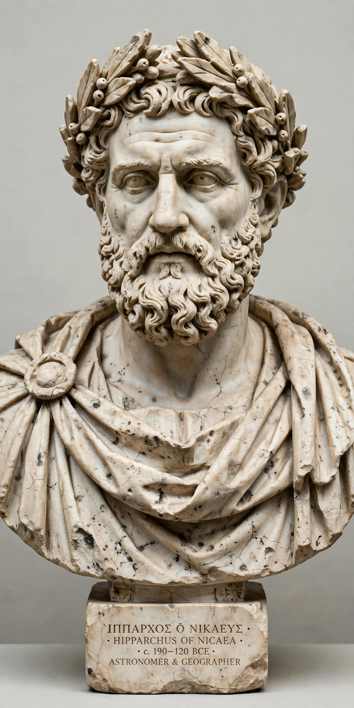

Wikipedia — the free encyclopedia
| Born | c. 190 BC, Nicaea, Bithynia |
| Died | c. 120 BC, Rhodes (probably) |
| Fields | Astronomy, geography, mathematics |
| Known for | Precession; star catalogue; chord table |

Hipparchus of Nicaea (c. 190 – c. 120 BC).
Hipparchus of Nicaea (c. 190 – c. 120 BC) was a Greek astronomer, geographer and mathematician, widely regarded as the greatest astronomer of antiquity. Working mainly on Rhodes, he founded the quantitative, predictive astronomy that later Greek, Indian and Islamic astronomers built upon.
His most famous discovery was the precession of the equinoxes: comparing his own observations with records made about 150 years earlier, he found that the equinox points drift slowly westward along the ecliptic, completing a circuit in tens of thousands of years.
Hipparchus was the first to apply terrestrial coordinates systematically to the sky, fixing stars by positions on the celestial sphere just as latitude and longitude fix places on Earth, and he urged that terrestrial maps likewise be based on astronomically measured latitudes and longitudes rather than travellers' tales alone. He compiled a catalogue of roughly 850 stars with their positions and brightness classes — the ancestor of Ptolemy's catalogue. He drew up the first known table of chords, the forerunner of trigonometry, computing in the Babylonian sexagesimal system.
Almost all his writings are lost; what is known of him comes chiefly through Ptolemy's Almagest, which is built largely on Hipparchus's work.